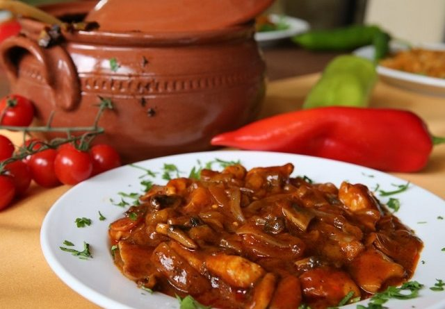

I am gonna talk about local dishes but as i'm living in Istanbul and i am an immigrant, i will tell you some Bulgarian local dishes.
LUTENİTSA
We could call it the Bulgarian ketchup or the caviar of peppers, and the Bulgarian people know it from their earliest childhood. The Lutenitsa is a very typical and delicious red sauce in Bulgaria with peppers and consumed simply on a toast, with or without cheese, or to raise the taste of certain meats and garnishes.
Basically ingredients of a lutenitsa is;
Red peppers, eggplant, tomato concentrate, ordinary oil (ex. sunflower), garlic, sugar, vinegar, salt, red pepper.
KAVARMA
This is one of the most popular meals in Bulgaria which is not so famous outside the country. The ingredients and preparations depend on the region. Almost every part of Bulgaria has it’s own Kavarma recipe. In general, the meal consists of marinated cooked meat and vegetables. It could be mild or spicy depending on the region and the likings. Goes perfectly well with beer or rakia.
